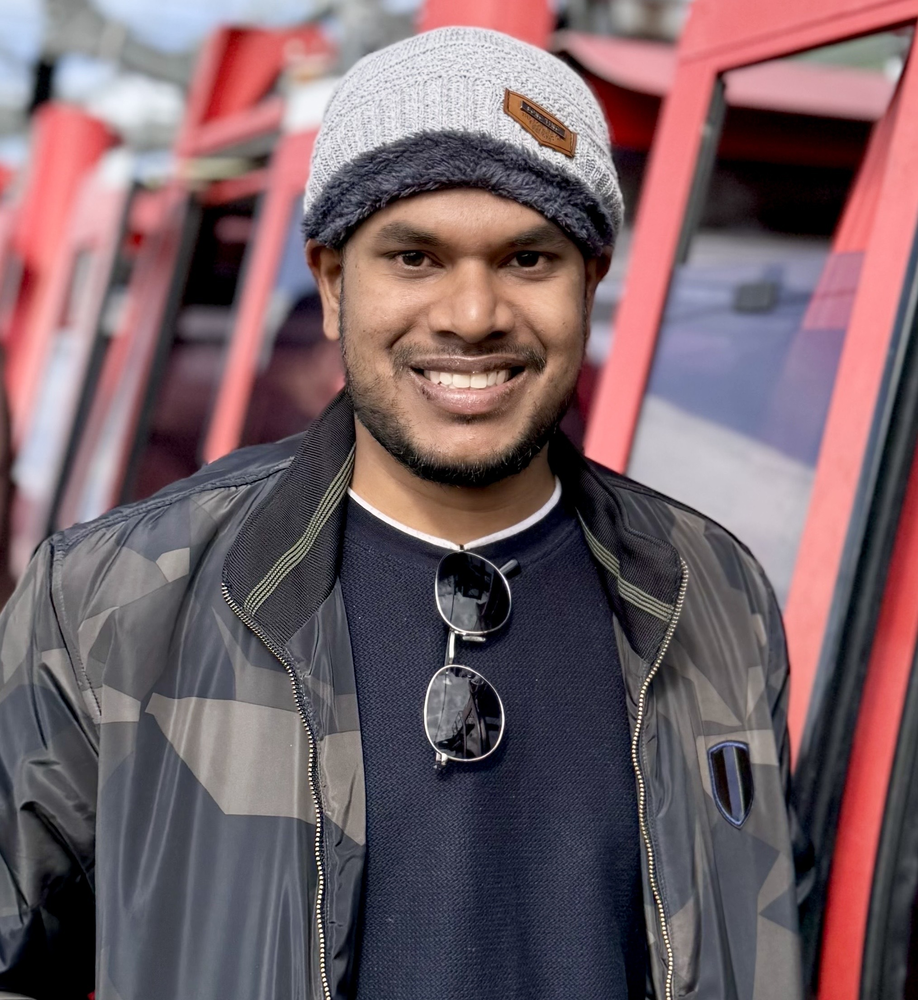

|
Rajesh Sureddi
Hi there 👋
Currently, I am pursuing a PhD in Electrical and Computer Engineering (ECE) at the University of Texas at Austin's LIVE lab under the esteemed guidance of Prof. Alan C Bovik. I have also earned a master's degree from IIT Hyderabad and enriched my experience by working for a year and a half at Intel Labs. This experience enabled me to hone my skills and gain practical knowledge in these areas. Besides academic and professional pursuits, I am an enthusiastic sportsperson, and I enjoy playing cricket, badminton, and table tennis in my leisure time.
Email /
Google Scholar /
GitHub /
LinkedIn /
|

|
|
Research & Development Experience
|
|
Miscellaneous
- QIF2021 - Finalist at Qualcomm Innovation Fellowship 2021.,
- INSA2016 - Summer Research Fellowship holder through Indian Academy of Science, Bengaluru.,
|
|